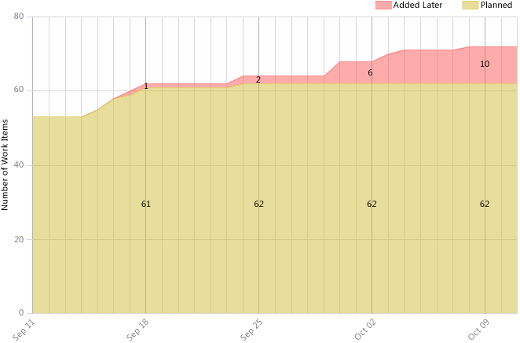
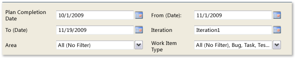

Toward the end of an iteration, you can use the Unplanned Work report to determine how much work was added to the iteration that was not planned at the start of the iteration. You can view the unplanned work as measured by work items added, such as tasks, test cases, use cases, and bugs.
Having unplanned work may be acceptable, especially if the team has scheduled a sufficient buffer for handling the load of unplanned work (for example, bugs). On the other hand, the unplanned work may represent a real problem if the team does not have the capacity to meet it and is forced to cut back on the planned work.
For information about how to access, refresh, or manage reports, see Reports (GovDev).
|
|
|---|
|
This report requires that the team project collection that contains your team project
was provisioned with SQL Server Reporting Services. This report is not available
if
|
|
In this topic |
You can use this report to answer the following questions :
|
Required Permissions
To view the report, you must be assigned or belong to a group that has been assigned the Browser role in Reporting Services. For more information, see Add Users to Team Projects or Managing Permissions.
 Data
in the Report
Data
in the Report
The Unplanned Work report is useful when the team plans an iteration by identifying all work items that they intend to resolve or close during the course of the iteration. The work items that are assigned to the iteration by the start date of the report are considered planned work. All work items that are added to the iteration after the start date are identified as unplanned work.
The following illustration shows an example of the Unplanned Work report. This example is fairly healthy because only 10 items were added after the start of the iteration, representing a 16% increase over the work that was planned
The data is derived from the data warehouse.
You can filter the report in the following ways:
-
Change the start and end dates for the report.
-
Filter the tasks, stories, test cases, and bugs that are counted in the report by specifying iteration and area paths, types of work items, and states.
For more information, see Filtering the Report and Changing the Displaylater in this topic.
Required Activities for Tracking Unplanned Work
For the Unplanned Work report to be useful and accurate, the team must perform the following activities to track work items:
-
At the start of an iteration, review the backlog of use cases, test cases, tasks, and bugs, and assign each to the iteration during which the team will work on them.
-
As work is identified and added to the iteration, update the Iteration field of the work item to match the current iteration.
-
(Optional) To support filtering, assign the Area that represents the product area to which the work item belongs.
 Note
Note
For information about how to define iteration and area paths, see Create and Modify Areas and Iterations.
Setting
the Duration of the Iteration
To review the amount of unplanned work for a current iteration, you must set the planned end date and the start dates for the report to match those of your current iteration cycle.
To change the duration of the iteration
-
Next to Plan Completion Date or From Date , click the calendar icon, and then click a date.
-
Click View Report.
Interpreting
the Report
The Unplanned Work report displays information that you can use to understand how well the team plans its work and whether the team is encountering scope creep during an iteration.
You can use the Unplanned Work report to understand how well the team is estimating the work that they can complete during an iteration. As a scrum master or project manager, you can use this report to derive historical data about your team. You may want to discuss with your team the idea of having a goal that limits the amount of work added to an iteration to no more than 10% of the planned work.
Also, you can use the Unplanned Work report in addition to the team velocity and team capacity data that is provided in the Use Case Planning and Iteration Task Backlog workbooks to help plan future iterations. For more information, see Use Case Planning Workbook and Iteration Task Backlog Workbook .
Questions That the Report Answers
You can review the report to determine the amount of scope creep that has occurred throughout an iteration or over time. Specifically, you can find answers to these questions:
-
What is the delta between planned work at the start of the iteration and work performed?
-
Is too much work being added during the iteration? Is the team expanding the scope of the work?
-
Is too much work in progress?
Filtering
the Report and Changing the Display
You can filter the Unplanned Work report or change its display in the following ways:
-
Change the planned end date and start dates for the report.
-
Filter the use cases, bugs, and tasks that appear in the report by specifying iteration and area paths and types of work items.
The following illustration shows the available filters and display options:
To filter the tasks, use cases, and bugs that appear in the report
-
Perform one or more of the following actions:
-
In the Iteration or Area list, select the check box of each iteration or product area to include.
-
In the Work Item Type list, select the check box of each work item type to include.
-
-
Click View Report.